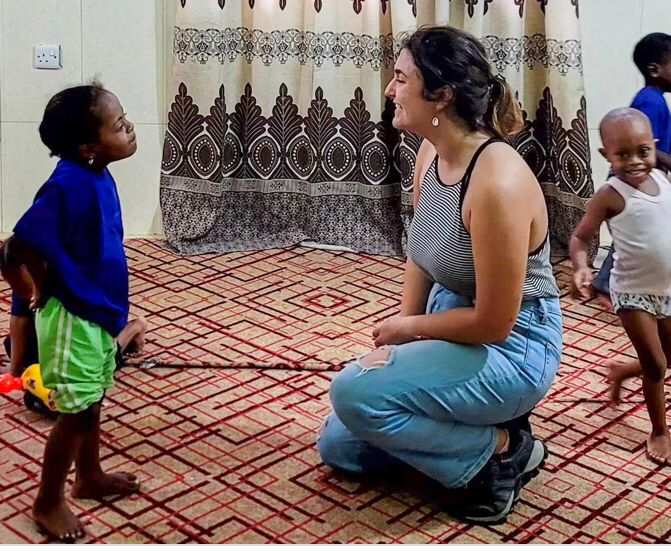
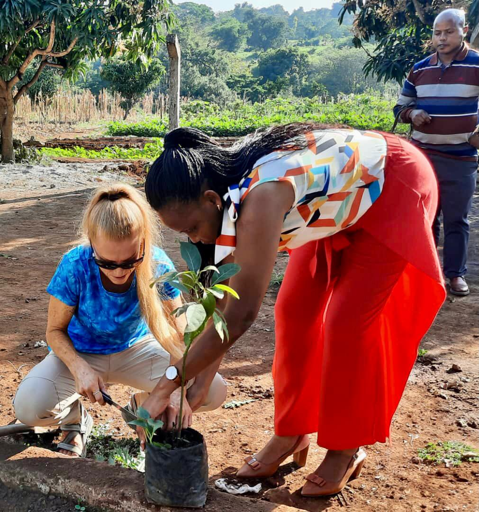

Umoja Cultural Experience is an organization based in North Tanzania, East Africa. We connect international volunteers with local projects focused on sustainable impact.
To operate volunteering programs in Tanzania, in partnership with international volunteers and with key focus on sustainable development goals (SDGs) specifically on quality education, climate action, good health and well being.
Our Vision
To create a world where communities share meaningful cultures and experience for sustainable society. Join Umoja's initiative to make a difference in Tanzania! Volunteer with us in education, health, environment, and cultural immersion projects. Contribute your skills, learn from our communities, and experience the warmth of Tanzanian culture. Together, let's create positive change and unforgettable memories.
This is specifically for the Volunteers who have shown interest working with students at
Nursery Level; Early Childhood Education from age 3 to 5 and Primary pupils.
Volunteering as a teacher in a school abroad is a unique and enriching experience. It allows
volunteers to share their experience with children, while also learning from them. Volunteers
may assist in the classroom by helping the students with their assignments, planning lessons, or
teaching new subjects. They may also lead extracurricular activities, such as sports, musics, or
art.
This opportunity not only provides an enriching experience for the children, but also help
volunteers develop their communication, leadership, and cultural awareness skills. Volunteering
in a daycare school provides an opportunity to experience different culture, learn a new
language, and connect with local families.
Working with children requires patience, the experience enhance volunteer’s creativity, and the
ability to work with diverse groups of people. These are valuable skills that can be applied to
many aspects of life.
The classroom structure might include an ideal number of 20 to 30 kids and the Volunteer will
work with a local teacher from the school. An In country Volunteer maybe assigned to work with
the Volunteer especially where language barrier apply. The Nursery school session commence
from 8am to 11:30 am.
VOLUNTEERING ACTIVITIES
Teach reading, writing, and basic mathematics (counting, addition)
Facilitate extra-curriculum activities; sports, games, songs, and arts and crafts
Assess the development and the progress of the students by helping to create testing
procedures and standards
Organize and prepare lesson plans
Work with the teacher to develop pre-school activities and materials to use throughout
the year
EDUCATION EXCHANGE SESSIONS
We all understand that education is the foundation of our society and is essential for personal and
economic development. During the education talk session, volunteers will have an opportunity to have a
close look at the structure and content of Tanzanian Education System, as well as its approach to teaching
and assessment.
The session will also take a close look at the challengers and opportunities that exists within the current
system; and a discussion of any recent or ongoing education reforms or initiatives.
UCE volunteers will be exposed into Education System offered by the Government of the United
Republic of Tanzania. Through Education Talk and Education Exchange Program, volunteers
will learn different levels of education offered; Pre-school, Primary Education, Secondary
Education and Collage/University level facilitated by Education expertise.
During Education Exchange Program, UCE volunteers will have an opportunity to interact with
local students at the collage lever through moderated dialog. This session focus on brief learning
on similarities, difference, strengths and weaknesses of both Education Systems; Tanzania
Education System In comparison with Education System of the volunteers country of Origin.
Volunteer in the Health Center
Assist with community health outreach and clinics.
This is best for the Health Practitioner Volunteers, and students enrolled in any health related studies, such as medical students, nurses, public health, nutritionists and any other interns or persons with experience in health provision services.
Our goal is to improve the health of vulnerable populations in Tanzania Communities by providing Health Education. We recognize that health is a basic human right, and we are committed to making a positive impact in communities where access to healthcare is limited.
Whether it’s providing technical assistance, teaching basic hygiene practices, or offering health screenings, every volunteer makes a unique difference.
Our program brings volunteers from diverse backgrounds, creating a global community of care; together, we can address health issues that affect millions of people in Tanzania, such as Malaria, HIV/AIDS, and Malnutrition.
In addition to improving the health of the community, our program also provides volunteers with a unique opportunity to learn about different cultures and gain valuable life experience. By joining this program, you will not only be helping others but also embarking on a journey of personal growth and self-discovery.
VOLUNTEERING ACTIVITIES:
Offering health education; teach basic hygiene practices, nutrition, and preventive measures.
Assist in health clinics; work alongside local healthcare professionals to provide basic medical care such as taking vital signs and treating common illnesses.
Conducting Health Screenings; screen community members for conditions like diabetes, hypertension, or HIV/AIDS.
Administer vaccines; help vaccinate children and adults to prevent diseases such as polio, measles, and tetanus.
Other activities may include outreach volunteering, attending seminars and workshops, and data entry.
TANZANIAN HEALTH TALK:
Under this session, UCE Volunteers will have an opportunity to learn about the Tanzanian Health System, from health centers, referral hospitals/regional hospitals, to national hospitals.
During health talk sessions, UCE will invite qualified medical personnel, who will give an overview of the health system in Tanzania. UCE might also organize an exchange program, where the volunteers interact with local college/university students pursuing different health professions.

Volunteer to Help Kids with Disabilities / Special Needs
Assist with special needs children and orphans.
Volunteering abroad in orphanages and with vulnerable children can be an eye-opening experience. It offers you the opportunity to make a difference in the lives of those who need it most and to gain a deeper understanding of the world.
By volunteering, you can provide emotional support, educational assistance, and basic needs such as food and shelter to children who have lost their parents or are living on the streets. You can also learn about the culture and society of the Tanzanian people, which can help broaden your perspective on life.
Imagine if you were a child with no home to sleep in, and perhaps no family to protect you. It would be difficult to obtain your daily necessities without guidance, and even more difficult to access education or simply enjoy being young.
Many children around the world run away from home, are abandoned, orphaned, or live in desolate areas. Some have special needs or disabilities without access to rehabilitation. Some just need someone to play with and give them love and care. As an international volunteer, you have the opportunity to extend love and support to them through this program.
VOLUNTEERING ACTIVITIES:
Providing Educational Support: Teaching basic English and reading books
Offering Emotional Support: Spending time with the children, playing games, doing art, and listening to their stories
Guidance and Counseling: Teaching moral guidance, manners, and good behavior
Volunteer in the Juveniles Detention Center
Work on education and rehabilitation programs.
Support rehabilitation efforts through mentorship, tutoring, sports, and constructive life skills sessions.

Climate Activities
Planting and other climate improvement activities.
Climate change is one of the most pressing issues of our time, with far-reaching consequences for our planet and our future. While government policies and corporate action are crucial in addressing this global challenge, individual efforts also play a significant role.
Our modern world is now experiencing a gradual increase in the average temperature of the Earth’s atmosphere and oceans, mostly caused by a build-up of greenhouse gases from burning fossil fuels like coal, oil, and natural gases. Rising sea levels, extreme weather, loss of natural habitats, and loss of human lives are just a few consequences.
Climate change volunteering is an intervention effort, providing people from all walks of life with an opportunity to make a positive impact. Whether it is helping with reforestation projects, raising awareness about climate change in a community, or supporting research and innovation, every small step counts.
UCE offers a special placement for volunteers who have shown interest in environmental conservation programs and are passionate about Environmental Sustainability and Global Climate Action.
During your volunteering period in Tanzania, you will learn about the local climate, weather patterns, environmental issues that affect the area, and natural disasters. During these sessions, you will learn about Government Sustainability efforts to reduce emissions, protect natural resources, and promote renewable energy. You will also learn about political and economic factors, understanding how politics and economics impact climate change, including any environmental policies or initiatives in the area.
VOLUNTEERING ACTIVITIES:
Planting trees
Participate in clean-up campaigns in the local community
Maintaining/improving water catchment areas
Educating the community about climate change by leading workshops and giving presentations
Sensitizing communities about environmental pollution, e.g., smoke and plastic materials
Additional placements
Women/Youth empowerment, Volunteer with RED CROSS Tanzania (Northern Zone), Social work Volunteer Program, Rehabilitation Centers, and more.

.jpg)